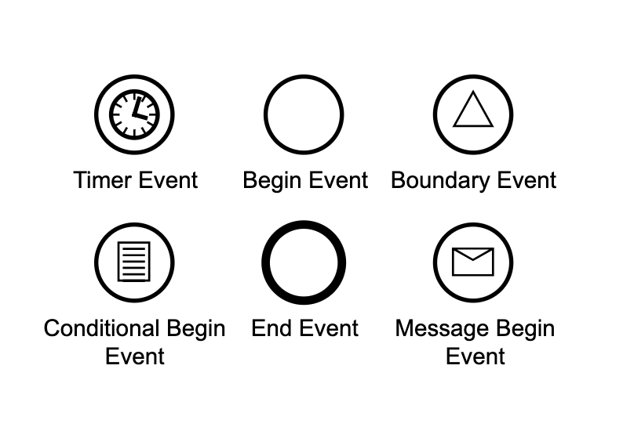

INTRO
The BPMN 1.0/2.0 bpe_event module provides generic event-handling functionality for BPE. It defines event triggers, boundary limits, timers, and pub/sub message subscriptions.
EVENTS
BPE supports multiple event structures defined in bpe.hrl:

#messageEvent{}
Used to represent synchronous communication events inside workflows.
-record(messageEvent, {
id = [] :: [] | list() | binary(),
topic = [] :: [] | list() | binary(),
sender = [] :: [] | term(),
timeout = [] :: [] | #timeout{},
name = [] :: [] | term(),
payload = [] :: [] | term()
}).#asyncEvent{}
Represents asynchronous (cast) communication events inside workflows.
-record(asyncEvent, {
id = [] :: [] | list() | binary(),
sender = [] :: [] | term(),
topic = [] :: [] | list() | binary(),
name = [] :: [] | term(),
payload = [] :: [] | term()
}).#broadcastEvent{}
Represents system-wide events that are published to multiple subscribers.
-record(broadcastEvent, {
id = [] :: [] | list() | binary(),
sender = [] :: [] | term(),
topic = [] :: [] | list() | binary(),
type = immediate :: immediate | delayed,
name = [] :: [] | term(),
payload = [] :: [] | term()
}).#boundaryEvent{}
An event bound to the boundary of an activity (e.g., a task). It can trigger a timeout or redirect execution when fired.
-record(boundaryEvent, {
id = [] :: list() | atom(),
name = [] :: list() | binary(),
prompt = [] :: list(tuple()),
etc = [] :: list({term(), term()}),
payload = [] :: [] | binary(),
timeout = [] :: [] | #timeout{},
timeDate = [] :: [] | binary(),
timeDuration = [] :: [] | binary(),
timeCycle = [] :: [] | binary()
}).EVENT API
Use these functions to submit events to a process session or manage subscriptions:
messageEvent(procId(), #messageEvent{}) -> {complete, any()} | {error, any()}
Sends a synchronous message event to the process gen_server. It wakes the process if offline, locks it, and runs the handler callback.
Event = #messageEvent{
name = <<"approval">>,
payload = <<"approved">>
},
{complete, NextTask} =
bpe:messageEvent(<<"proc-123">>, Event).asyncEvent(procId(), #asyncEvent{}) -> ok | {error, any()}
Sends an asynchronous event (cast) to the process gen_server.
Event = #asyncEvent{name = <<"cancel">>},
ok = bpe:asyncEvent(<<"proc-123">>, Event).broadcastEvent(Topic::binary() | list(), #broadcastEvent{}) -> ok
Publishes a broadcast event to all subscribers of the specified topic.
If the broadcast type is immediate, the target process is immediately loaded and started,
and the message is delivered via gen_server:cast.
If the type is delayed (non-immediate), the message is appended directly to the process's
database queue at /bpe/messages/queue/<ProcId> without waking it up.
Broadcast = #broadcastEvent{
type = immediate,
name = <<"new_invoice">>,
payload = InvoiceId
},
ok = bpe:broadcastEvent(
<<"finance_topic">>,
Broadcast
).subscribe(procId(), Topic::binary() | list()) -> ok | exist
Subscribes a process to a broadcast topic in the database registry.
bpe:subscribe(
<<"proc-123">>,
<<"finance_topic">>
).unsubscribe(procId(), Topic::binary() | list()) -> ok
Unsubscribes a process from a broadcast topic.
bpe:unsubscribe(
<<"proc-123">>,
<<"finance_topic">>
).CALLBACK API
To intercept and process events, you must implement the action/2 callback in your process
module.
The engine redirects event processing to this function:
Module:action({event, Name, Payload}, Proc) -> #result{}
Example handler callback implementation:
-module(my_workflow).
-include_lib("bpe/include/bpe.hrl").
-export([action/2]).
% Handle a synchronous messageEvent
action({event, <<"approval">>, <<"approved">>}, Proc) ->
logger:info("Invoice was approved!"),
#result{
type = reply,
reply = ok,
state = Proc#process{status = <<"approved">>}
};
action({event, EventName, Payload}, Proc) ->
logger:notice("Unhandled event ~p with payload ~p",
[EventName, Payload]),
#result{
type = reply,
reply = {error, unhandled},
state = Proc
}.